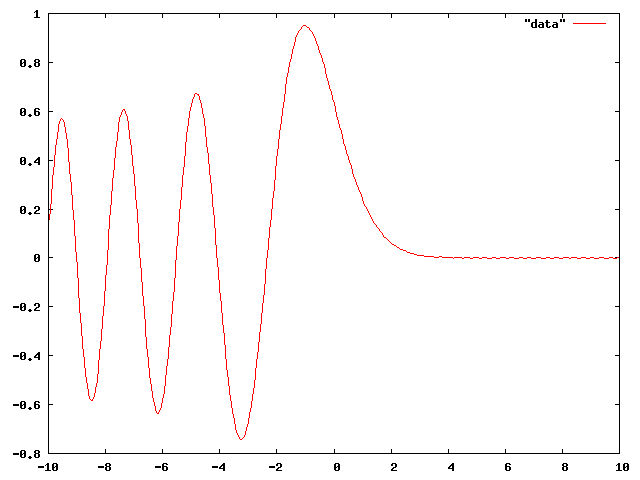

第9回課題で求めた $\displaystyle \int^1_0 \frac{4}{1+x^2} dx$ の近似値
2 3.10000000000 -4.159265e-02
4 3.13117647059 -1.041618e-02
8 3.13898849449 -2.604159e-03
16 3.14094161204 -6.510415e-04
32 3.14142989317 -1.627604e-04
64 3.14155196349 -4.069010e-05
128 3.14158248106 -1.017253e-05
256 3.14159011046 -2.543132e-06
512 3.14159201781 -6.357829e-07
1024 3.14159249464 -1.589457e-07
2048 3.14159261385 -3.973642e-08
4096 3.14159264366 -9.934098e-09
8192 3.14159265111 -2.483517e-09
16384 3.14159265297 -6.208678e-10
32768 3.14159265343 -1.552523e-10
65536 3.14159265355 -3.881162e-11
131072 3.14159265358 -9.822365e-12
262144 3.14159265359 -2.351896e-12
524288 3.14159265359 -5.706546e-13
1048576 3.14159265359 -2.247091e-13
2097152 3.14159265359 -4.662937e-14
4194304 3.14159265359 -3.579359e-13
に対して、リチャードソン加速(シンプソン公式)を適用せよ。結果は以下のようになる。
3.13333333333333 -8.259320e-03 3.14156862745098 -2.402614e-05 3.14159250245871 -1.511311e-07 3.14159265122482 -2.364971e-09 3.14159265355284 -3.695666e-11 3.14159265358922 -5.768719e-13 3.14159265358978 -9.325873e-15 3.14159265358979 4.440892e-16 3.14159265358979 -4.440892e-16
発展問題 (余裕のある人だけやること)
我々が普段見かける虹の内側に、白っぽい縞模様が見えることがある。これは過剰虹を呼ばれる現象である。過剰虹の明暗の強度は、エアリー (Airy) 関数と呼ばれる次の関数の2乗で与えられることが知られている。 $$\displaystyle A_i(x) = \dfrac{1}{\sqrt{\pi}}\int_0^\infty \cos\left( xu+\frac{u^3}{3}\right)du$$ 数値積分によってエアリー関数の値を求め、$-10 \le x \le 10$ の範囲でエアリー関数のグラフを描け。ただし積分の上限 $\infty$ は適当に大きい値で代用すること。(この積分は収束が遅いので、代用してしまうと数値積分の精度は実はあまり良くない。) グラフの概形は以下のようになる。
